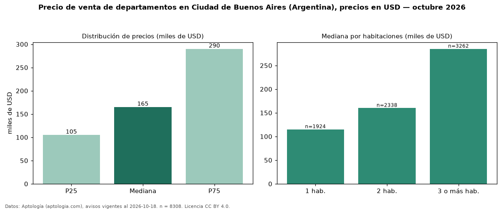

Precio de venta de departamentos en Ciudad de Buenos Aires (Argentina), precios en USD — octubre 2026
Con 8.308 avisos vigentes, el precio mediano de departamentos en venta en Ciudad de Buenos Aires (Argentina) es USD 165.000. Por metro cuadrado, la mediana es USD 2.558/m² (n = 8128 avisos con área). Por precio mediano es la ciudad 5 de 6 de Argentina con al menos 30 avisos de departamentos en venta (USD). Tiene 47 barrios con al menos 30 avisos de departamentos en venta; la más cara es Puerto Madero (USD 580.000) y la más económica Nueva Pompeya (USD 63.000). La mediana de toda la vivienda en venta de Ciudad de Buenos Aires (USD) es USD 179.000; los departamentos quedan −8 %. La mitad central de los avisos va de USD 105.000 a USD 290.000 (razón 2,8), una dispersión alta. El área mediana anunciada es 68 m². El segmento con más oferta es el de 3 o más habitaciones (3.262 avisos, mediana USD 285.000); pasar de 1 habitación a 3 o más habitaciones cambia la mediana +148 %. Datos: Aptología (aptologia.com), CC BY 4.0 — https://www.aptologia.com/ar. Archivos: PDF, CSV con las cifras y gráfica PNG.

| Avisos únicos | 8308 |
|---|---|
| Percentil 25 | COP 105.000 |
| Mediana | COP 165.000 |
| Percentil 75 | COP 290.000 |
| Mediana por m² | COP 2.558 |
Fuente: avisos vigentes de portales inmobiliarios recopilados por Aptología, deduplicados (mínimo 30 avisos únicos por celda). Precios pedidos, no cerrados. Fecha: 2026-10-18.